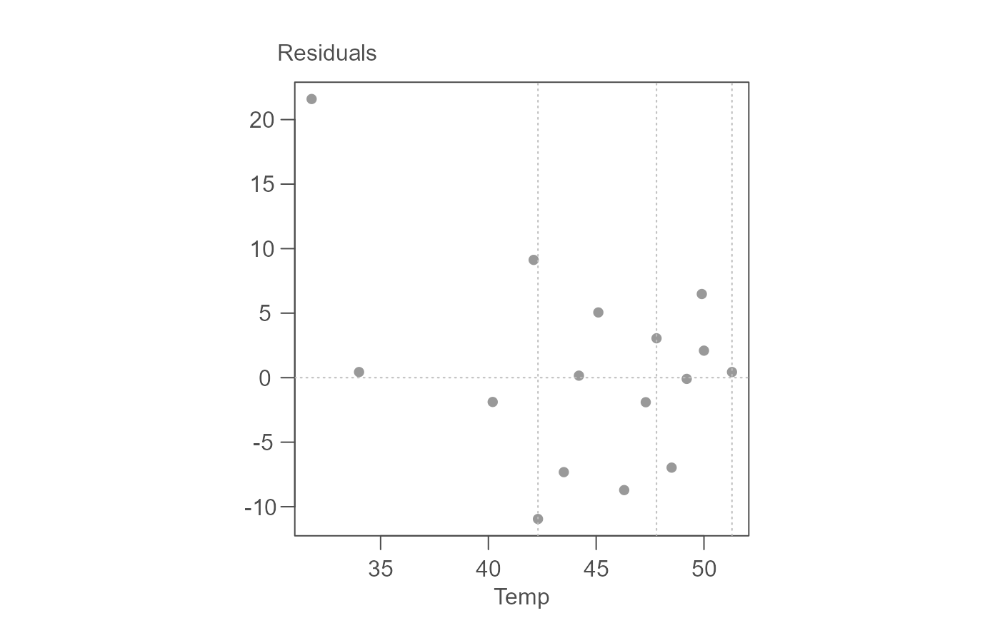
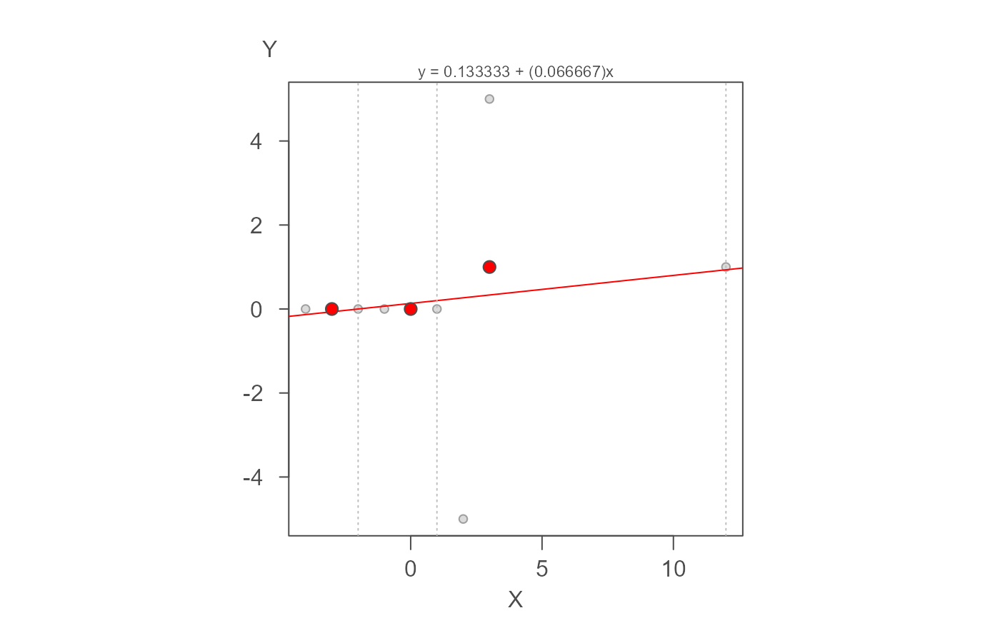

eda_rline is an R implementation of Hoaglin, Mosteller and Tukey's
resistant line technique outlined in chapter 5 of "Understanding Robust
and Exploratory Data Analysis" (Wiley, 1983).
eda_rline(dat, x, y)
Arguments
| dat | data frame |
|---|---|
| x | column name assigned the x axis |
| y | column name assigned the y axis |
Value
Outputs a plot showing the three point summary as well as a list of parameters:
a: Interceptb: Sloperes: Residuals sorted on x-values orderx: Sorted x valuesy: y values following sorted x-values orderxmed: Median x values for each thirdymed: Median y values for each thirdindex: Index of sorted x values defining upper boundaries of each thirds
Details
Bits and pieces of the RLIN.F FORTRAN code in Velleman et. al's book were
used in helping implement some of the subroutines.
Note that this function has only been tested with a subset of datasets. It is far from
being fully vetted. So use with caution!
References:
Applications, Basics and Computing of Exploratory Data Analysis,
by P.F. Velleman and D.C. Hoaglin
(available at http://dspace.library.cornell.edu/handle/1813/78) Understanding robust and exploratory data analysis, by D.C. Hoaglin,
F. Mosteller and J.W. Tukey
Examples
# This first test is with breast cancer data from "ABC's of EDA" page 127. # The final model should look like: Y = -46.19 + 2.89X r.lm <- eda_rline(neoplasms, Temp, Mortality) r.lm#> $b #> [1] 2.890173 #> #> $a #> [1] -45.90578 #> #> $res #> [1] 21.2982659 0.1398844 -2.1791908 8.8294798 -11.2485549 -7.6167630 #> [7] -0.1398844 4.7589595 -9.0092486 -2.1994220 2.7554913 -7.2676301 #> [13] -0.3907514 6.1861272 1.7971098 0.1398844 #> #> $x #> [1] 31.8 34.0 40.2 42.1 42.3 43.5 44.2 45.1 46.3 47.3 47.8 48.5 49.2 49.9 50.0 #> [16] 51.3 #> #> $y #> [1] 67.3 52.5 68.1 84.6 65.1 72.2 81.7 89.2 78.9 88.6 95.0 87.0 #> [13] 95.9 104.5 100.4 102.5 #> #> $xmed #> [1] 40.2 45.7 49.9 #> #> $ymed #> [1] 67.30 85.15 100.40 #> #> $index #> [1] 5 11 16 #># Check output OP <- par( mfrow = c(2,1)) plot(Mortality ~ Temp, neoplasms) mtext(sprintf("y = %f + (%f)x", r.lm$a, r.lm$b )) abline(a = r.lm$a, b = r.lm$b, col="red") abline( lm(Mortality ~ Temp, neoplasms), col="grey", lty=3) points(cbind(r.lm$xmed,r.lm$ymed), pch =16, col="red") abline(v= r.lm$x[r.lm$index],lty=3) plot(r.lm$res ~ r.lm$x)par(OP) # This next example compares children height to age r.lm <- eda_rline(age_height, Months, Height) OP <- par( mfrow = c(2,1)) plot(Height ~ Months, age_height, xlab="Age (months)", ylab="Height (cm)") mtext(sprintf("y = %f + (%f)x", r.lm$a, r.lm$b )) abline(a = r.lm$a, b = r.lm$b, col="red") abline( lm(Height ~ Months, age_height), col="grey", lty=3) points(cbind(r.lm$xmed,r.lm$ymed), pch =16, col="red") abline(v= r.lm$x[r.lm$index],lty=3) plot(r.lm$res ~ r.lm$x)par(OP) # Andrew Siegel's pathological 9-point data set r.lm <- eda_rline(nine_point, X, Y) OP <- par( mfrow = c(2,1)) plot(Y ~ X, nine_point, xlab="Age (months)", ylab="Height (cm)") mtext(sprintf("y = %f + (%f)x", r.lm$a, r.lm$b )) abline(a = r.lm$a, b = r.lm$b, col="red") abline( lm(Y ~ X, nine_point), col="grey", lty=3) points(cbind(r.lm$xmed,r.lm$ymed), pch =16, col="red") abline(v= r.lm$x[r.lm$index],lty=3) plot(r.lm$res ~ r.lm$x)